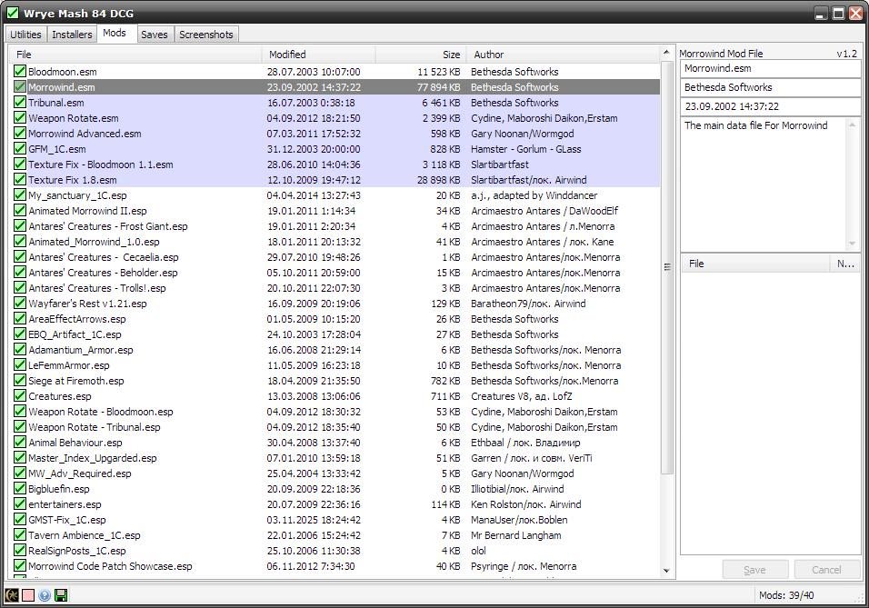
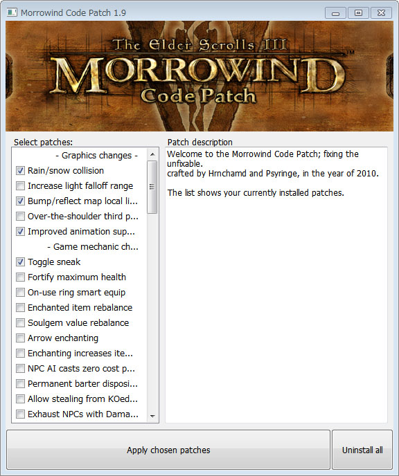
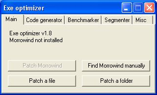
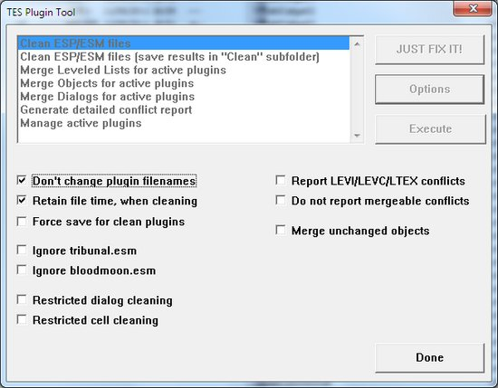
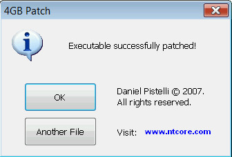
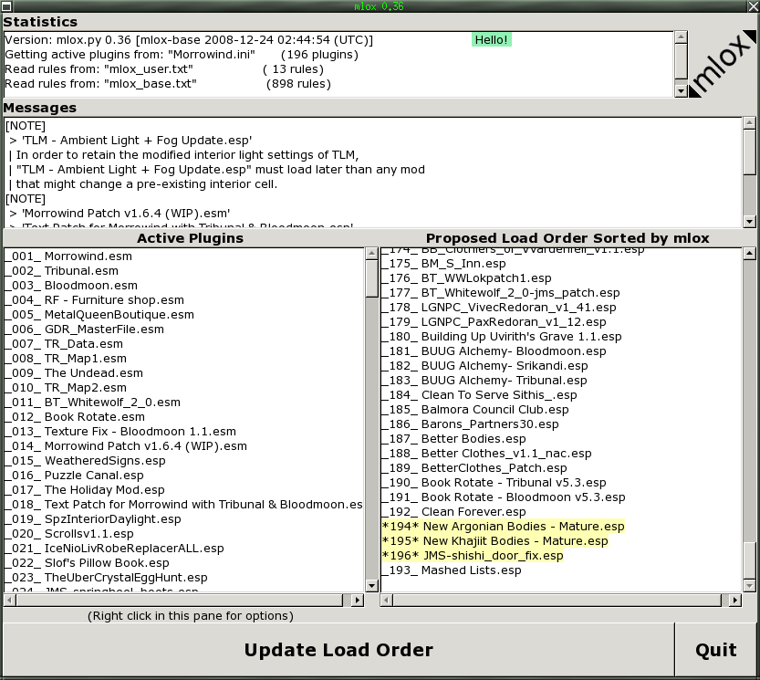
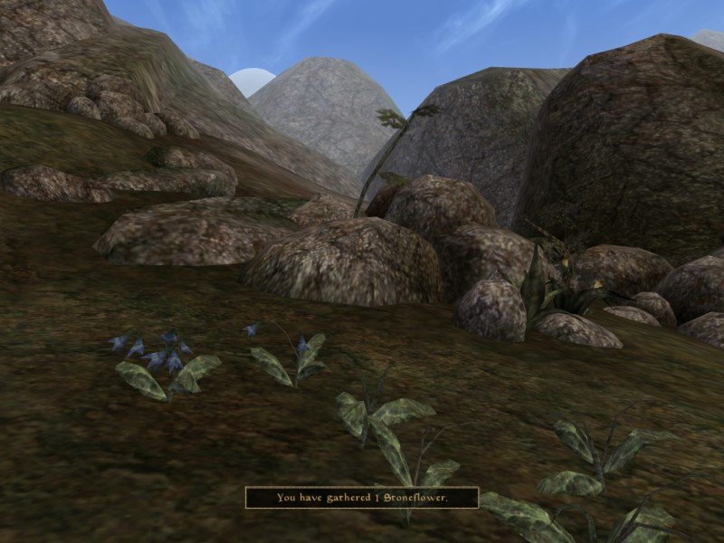
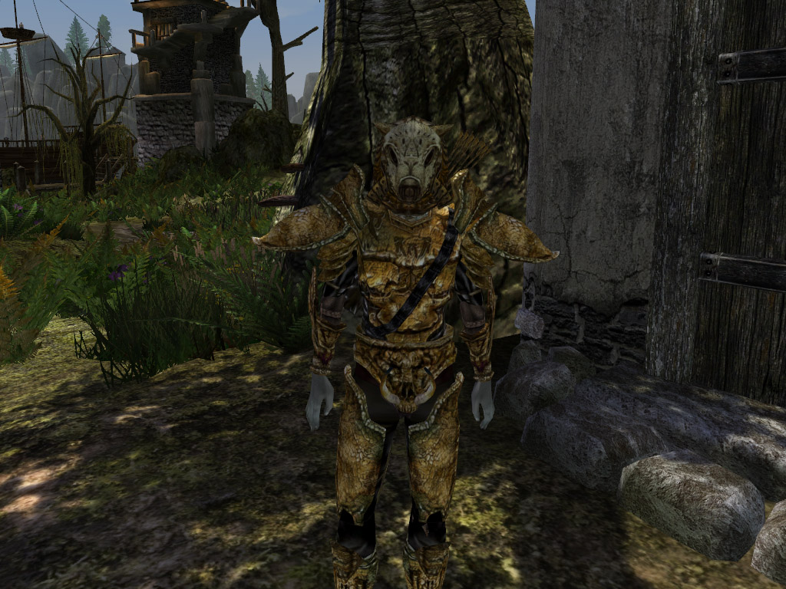
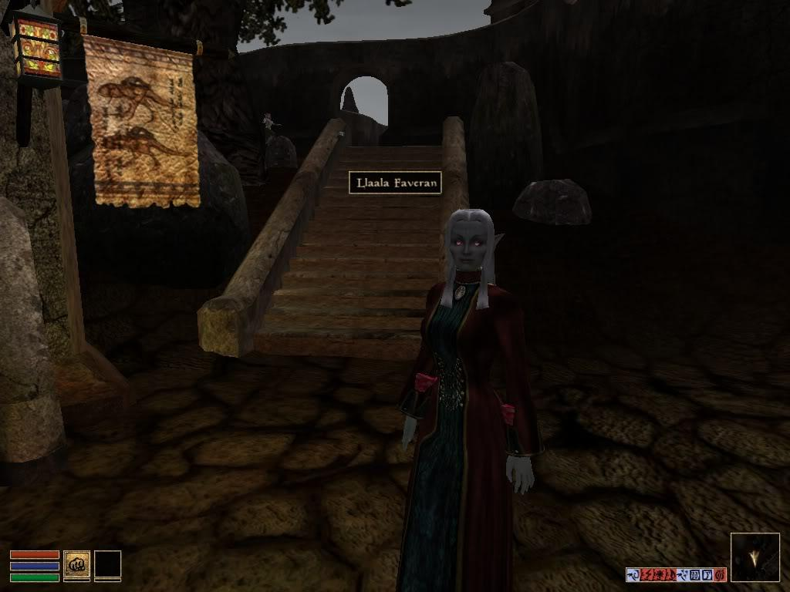
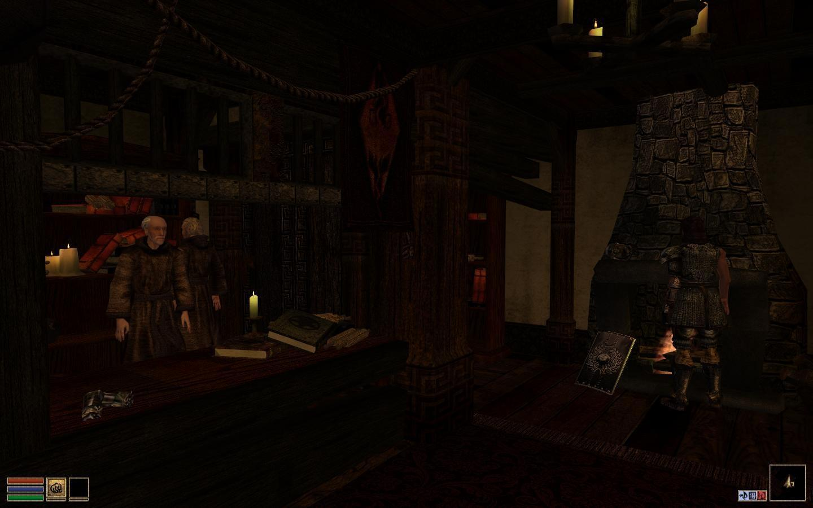

Wrye Mash Standalone
Wrye Mash is a utility that was created by the legendary Wrye, who has also made utitlies for other Bethesda games, that includes a multitude of different options to manage your Morrowind files.
This utitlity was created to give the user control over several aspects of their Morrowind install, including: cleaning save files, creating merged patches for leveled lists, detecting mod conflicts, and so much more.
No one should be installing Morrowind mods without having this utility installed on their computer.
The download includes a full readme that should be looked at prior to using the utility as it can be quite overwhelming for someone who has not used it before.
The standalone version does not require Python to be installed as everything has been embedded into the executable (mash.exe), unlike older versions.
Morrowind Patch Project v1.6.5b (BTB Edit)
The Morrowind Patch Project (MPP) is an unofficial patch for Morrowind. Originally started by Thepal, who called his work "The Unofficial Morrowind Patch", and continued by quorn under the "Morrowind Patch Project" name; the Morrowind Patch Project includes the work of a number of talented modders from the Morrowind modding community. Particular mention should be made of Kevin Dorner, Baldurdash, whose "Morrowind Text Patch" is included in the MPP from version 1.6.4 onwards, except for the corrections to ingame books that his "Morrowind Text Patch" makes.
It is recommended to use this patch in conjunction with the Morrowind Code Patch to ensure your game is stable and working up to modern standards. The fixes included in this patch fix numerous large and small bugs that were left behind after Bethesda stopped patching the game.
Morrowind Code Patch
The Morrowind Code Patch (MCP) by Hrnchamd and Psyringe aims to fix bugs and problems in Morrowind which are not addressable with The Elder Scrolls Construction Set. This is done with a user-friendly front-end, which applies only the patches you select to the Morrowind executable, while saving a backup of the original program. Works only with the Morrowind Bloodmoon expansion ver. 1.6.0.1820.
All fixes included with this patch are optional, but all of them add significant improvements to the overall quality of the game. At the very least, it is advisable to enable all of the bugfixes.
There is a discussion thread about this patch on the Bethesda Forums called "Repairing the Cogs of Morrowind".
Morrowind Graphics Extender
Morrowind Graphics Extender (MGE) improves the graphics of Morrowind. It includes features like 16:9 aspect ratio, v-sync, and distant land. It is only recommended for use on more modern/powerful computers, as the improvements come at the cost of considerable FPS hit. Laptops with integrated graphic cards have especially hard time running it.
The program has in-built Morrowind Script Extender (MWSE), so you don't need to use its standalone version.
Morrowind EXE Optimizer
This is a tool designed to improve morrowind performance and to reduce the frequency of CTDs. It works by disassembling morrowind, searching for vector calculations and recoding them to use to use sse instructions instead of the fpu. (Why that helps ctd's I have no idea...)
This will run on any PE executable file, but occasionally has been known to break things. It's only been extensively tested on a fully patched copy of bloodmoon.
TESTool
This is a helper utility for the The Elder Scrolls: Morrowind game. It can perform following functions:
Remove unnecessary data from ESM/ESP files (including GMST entries), significantly reducing number of conflicts between different mods.
Merge leveled lists for all active plugins, eliminating leveled list conflicts (this function was intended to replace Horatio's Leveled List Merger).
Merge changes done to the various TES objects and dialog entries.
Generate detailed conflict report for the given list of plugins.
4GB Patch
Morrowind was originally developed back in the early 2000's and thus was not properly coded to handle more than 2GB of memory at any given time.
The 4GB Patch is a simple utility that will patch the Morrowind executable file to enable a flag that allows it to properly use up to 4GB of memory.
This patch will help to alleviate crash to desktop (CTD) errors and just generally make the game more stable. Use this in conjunction with the EXE optimizer and the Code Patch and you will have a very stable game that will (hopefully) not crash very often.
Mlox
Mlox is a powerful utility that will automatically sort your mod list load oder.
This tool runs off of a masterlist of mods, added by users, that will check your load order and sort it as best it can. It will also inform you of any conflicts, errors, and warnings that are found.
While this tool is extremely useful and easy to use, it is important to read all of your mod's README files in order to properly determine a perfect load order.
Galsiah's Character Development Lean (GCD)
GCD is a very popular alternative to the original leveling system that is present in vanilla Morrowind. No longer will you need to raise skills you don't use, just to get that glorious +5 multiplier upon leveling up.
This will also remove the hard 100 cap on skills and attributes, so you can continue to raise them as you progress your character.
GCD is suitable for all character builds, but really shines when making a "pure" character as opposed to a jack-of-all-trades.
The lean version of GCD aims to simplify and compact the original version, making it fast and efficient.
MADD Leveler
MADD Leveler is an alternative to Galsiah's Character Development and the original Morrowind leveling system
This mod is much more simple than GCD and thus, is not nearly as script heavy. This means the performance can be better than GCD when combined with other script heavy mods. There are several optional ESP files included with the download, read the README file before activating any of these.
MADD is generally preferred to GCD when playing characters that do not focus on only one playstyle.
Keyring
This is a very simple mod that greatly enhances the quality of life in Morrowind. Keyring will combine all of your collected keys into a single item, so you no longer have hundreds of keys cluttering up your inventory.
Delayed DB Attack
With the release of the Tribunal expansion pack, comes a new enemy to inhibit your progress in Morrowind. The Dark Brotherhood will send assassin's to attack you in your sleep until you talk to a certain NPC.
These attacks can be quite numerous, and quite annoying for new and old players alike. This mod will delay the attacks until you either become the leader of a single Great House, or have been named Nerevarine by at least one Ashlander tribe in the main quest.
Graphic Herbalism
This plugin will allow you to harvest plants simply by activating them. It will no longer open a container that you need to loot, speeding up the looting portion of the game for a budding mage or herbalist.
To go along with the easy harvesting, this will also show a graphical representation of the plant that you harvested, so you are aware of which plants have already been activated.
The Imperial Legion Badge
Joined the Imperial Legion? Tired of always having to put on your uniform before talking to a higher ranking member? No longer will this be an issue, once you have the Imperial Legion Badge.
Simply have this badge in your inventory and all Imperial Legion members will recognize you as a member and allow you to initiate quests, all without having to lug around the full uniform.
Passive Healthy Wildlife
This plugin will make it so that the majority of non-diseased enemies are passive and do not immediately attack the player on sight. Sometimes a budding adventurer just wants to explore without having to fight everything.
The enemies will still attack when provoked, so it's just removing a minor annoyance for people that love to explore.
Arrow De-nocker
Have you ever raised your bow with the intention of sniping that enemy from afar, only to realize that you've changed your mind?
Now you have the ability to press the "Space Bar" key to de-nock the currently readied arrow or bolt. This allows you to be much more strategic with your sniping.
Blight Bounties
There is now a reason to go out of your way to kill all of these blighted creatures around Morrowind. Certain members of the Tribunal temple will now give you gold for killing these poor beasts.
Simply kill blighted creatures and collect their hides, then turn these hides into the temple to get a nice monetary reward.
Plain Paper Fix
Ever wondered why a blank piece of paper needs to be "read" before picking it up and carrying it off to your favorite skooma dealer?
Now you don't need to worry about "reading" blank pieces of paper, feel free to collect 'em all!
Less Generic NPC Project (LGNCP)
If you've played Morrowind for longer than a few hours, you soon realize that a lot of the NPC dialog can be quite stale and uninteresting. This is where LGNCP comes in, it aims to replace all of the generic and repetitive dialog with unique and interesting conversations.
It comes modular, so you can pick and choose which cities/towns/camps/etc. you'd like to experience (hint! I recommend them all!).
Morrowind Comes Alive (MCA)
From the description on Nexus (the original is always better, right?):
"Adds 1200 NPCs to over 550 cells via leveled lists to bring Morrowind to life. All NPCs have random heads, hair, and equipment (so no two will look the same), and appear and disappear at random. This 'rotation' simulates people travelling to and from towns, and going in and out of taverns, shops, guildhalls etc. The purpose of the mod is to alleviate the staticness of the Morrowind world, as well as adding colour, variety, and new challenges for players."
MCA does affect a lot of different leveled lists, so please ensure that you create a leveled list patch with Wrye Mash.
Starfire's NPC Additions
Starfire's NPC Additions is a plugin that is quite similar to MCA, but acheives results in a different way.
This plugin will dynamically spawn "lore friendly" NPCs around you, using advanced teleportation scripts. All of these NPCs will have real names and will look as though they were always apart of vanilla Morrowind.
Starfire's mod is not nearly as script heavy as MCA and is thus an alternative for those with lower end computer hardware.
Silent Chargen
Are you an alt-aholic? Do you love starting new adventures in Morrowind. Then you are probably tired of seeing the same mundane tutorial pop-ups everytime you start a new journey.
Now, you'll be able to start a new adventure and walk directly to character creation without being bothered with useless pop-ups slowing you down.
Immersive Chargen
Like the Silent Chargen plugin above, this plugin will imrpove the way the starting sequence works.
This plugin will make the chargen experience a lot more immersive than the vanilla version. It revamps the prison ship and the Census Office, with new scripted events and makes both places much more lively. This is certainly a plugin that should be tried at least once, it makes the new character sequence a lot more realistic.